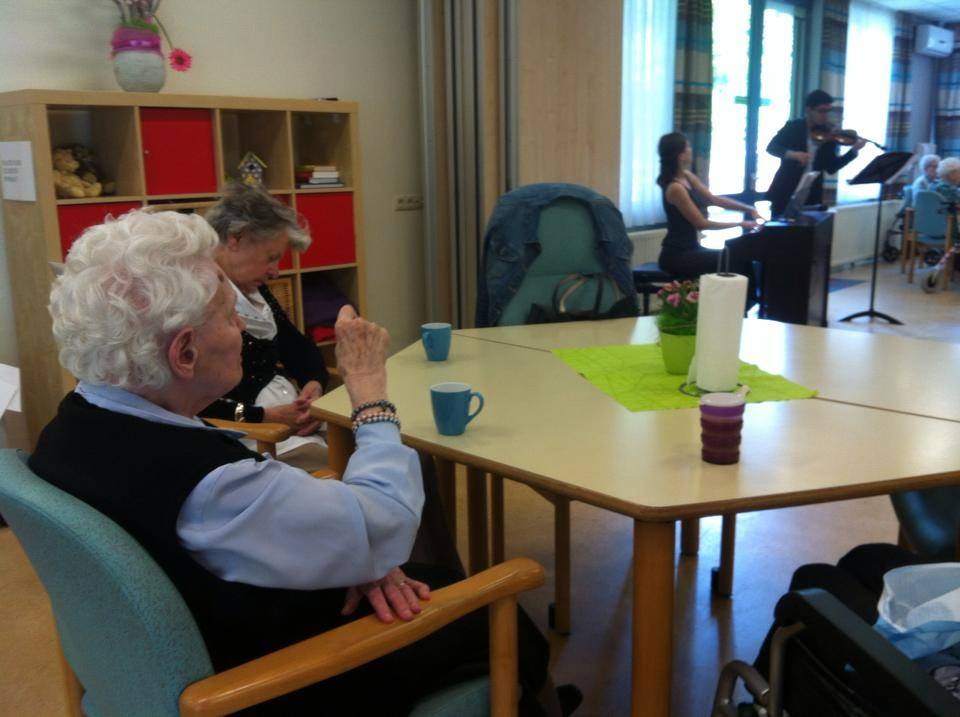

We are proud to announce that our first cycle of concerts in retirement houses was a huge success!
We thank our sponsors Stichting Jan en Clara Nijssen for making this 4 concerts possible! More then 100 people above age 65 enjoyed our music. A bunch of bright and positive emotions were spread among them and us as well.
